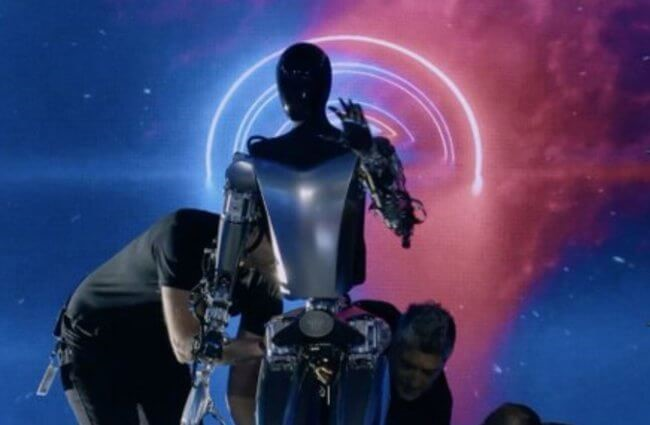

Новости о робототехнику
-
Робот Optimus: он похож на человека и стоит дешевле автомобиля.
Компания Tesla медленно, но верно превращается в производителя роботов. Как и ожидалось, в рамках мероприятия «День искусственного интеллекта 2022», Илон Маск представил прототип фирменного робота Optimus. Более того, тестовых аппаратов оказалось два: первый лишен внешней оболочки, но может ходить на двух ногах и выполнять рабочие задачи, а второй сделан максимально красивым, но на данный момент не может продемонстрировать ничего путного. По словам Илона Маска, главная задача компании Tesla — создать многофункционального робота, который стоит дешевле автомобиля.
Когда именно роботы Tesla Optimus будут представлены официально и поступят в продажу, неизвестно. Но их стоимость будет ниже, чем у автомобилей — около 20 000 долларов или даже меньше. При этом, компания не желает мелочиться и планирует выпускать миллионы экземпляров.